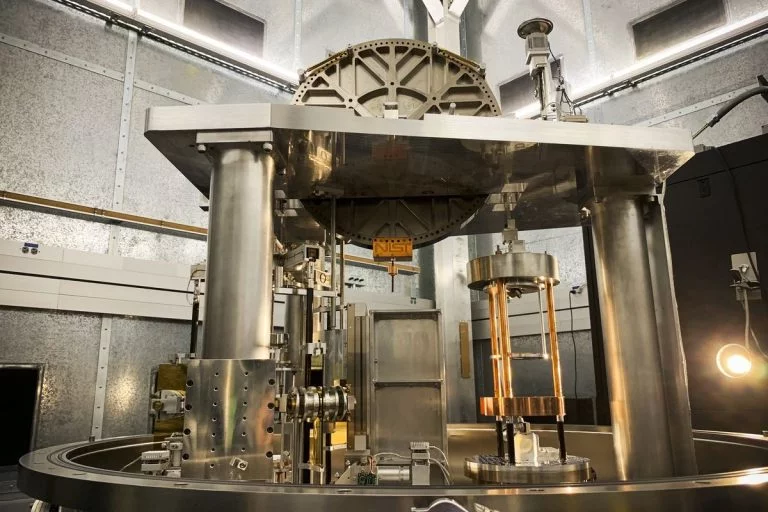
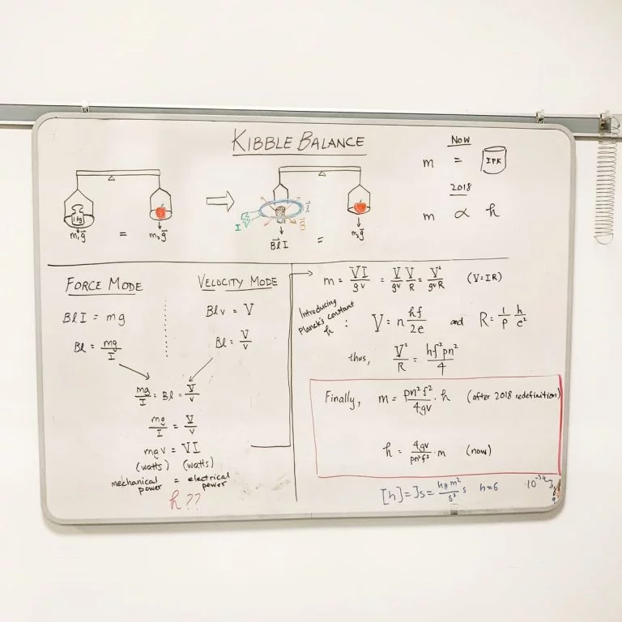
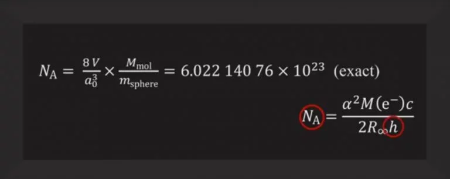

Berapakah nilai satu unit? Soalan itu sama seperti bertanya tentang berapakah panjang satu meter? Ataupun berapa lamakah satu saat? Ataupun berapakah berat satu kilogram? Bagi orang kebanyakan, soalan ini mudah untuk dijawab: nilai satu unit itu adalah apa sahaja yang tertera pada alat ukuran yang digunakan. Namun, senggat-senggat pada alat ukuran itu tidaklah muncul dari alam khayalan.
Unit Piawai Antarabangsa (Unit SI) ditakrifkan sewaktu Revolusi Perancis setelah ahli-ahli sains menyedari kepentingan piawaian nilai ukur. Berbanding dengan kaedah lama yang mengikut adat setempat, unit-unit yang ditakrifkan kali ini adalah berdasarkan hukum-hukum alam yang bersifat sejagat. Gagasan yang dibawa oleh ahli-ahli sains ini ialah “Untuk setiap masa. Untuk setiap bangsa”.
Pada tahun 1973, satu kilogram ditakrifkan sebagai jisim satu liter air pada 0 darjah Celsius. Pada waktu itu, ia tidak dipanggil kilogram tetapi grave. Perkataan gramme digunakan untuk sesuatu yang 1,000 kali lebih kecil jisimnya. Piawaian bertukar daripada “grave” ke “gramme” kerana disangka ukurannya lebih sesuai berbanding “grave”. Lalu “kilogram” digunakan kerana “gramme” itu sebenarnya terlalu kecil jisimnya untuk dijadikan piawai.
Pada tahun 1889, sebiji pancalogam yang diperbuat daripada Platinum dan Iridium berjisim 1 kilogram diisytiharkan sebagai takrif satu kilogram. Ia digelar Pencontoh Kilogram Antarabangsa (International Prototype of Kilogram, IPK), ataupun dengan nama manjanya: Sang Kilo (Le Grand K). Hal ini bermakna, mana-mana alat pengukur jisim hendaklah ditentu ukur dengan pencontoh itu. Jika Sang Kilo itu pecah menjadi 10,000 kepingan kecil akibat kecuaian sekalipun, satu kilogram akan tetap disandarkan kepadanya. Di situ lah masalahnya: takrifan unit menggunakan jasad jasmani akan menimbulkan masalah ketaktentuan. Sekarang ini pun kita sudah nampak masalah dengannya akibat pengumbulan habuk dsb. walaupun disimpan secara terkawal.
Dalam 7 unit asasi yang ditentukan oleh Biro Ukur Berat dan Ukuran Am Antarabangsa (Bureau Internasional des Poids at Mesures, BIPM), unit jisim belum beralih ke satu nilai sejagat dan sedang bergantung kepada nilai jasad jasmani. Unit panjang dan unit saat misalnya, kini sudah bergantung kepada nilai sejagat yang tidak berubah.
Kita boleh lihat bagaimana takrif satu meter berubah sepanjang sejarah. Pada tahun 1791, ia ditakrifkan sebagai 10,000,000 meter bersamaan jarak di antara Khatulistiwa dengan Kutub Utara merentasi bandar Paris. Boleh nampak kesan takrif tersebut kini kerana nilai-nilai ukur lilit bumi sememangnya mendekati 40,000,000 meter! Tahun 1889 ia ditakrifkan mengikut pancalogam Platinum-Iridium yang panjangnya adalah satu meter. Keadaan ini serupa dengan keadaan Sang Kilo kini. Sekarang ini takrif meter menggunakan kelajuan cahaya dalam hampagas kerana kita tahu sememangnya kelajuan cahaya tidak akan berubah, yakni 299,792,458 meter sesaat.
Maka, BIPM mencadangkan untuk menggunakan pemalar Planck, h, untuk mejadi takrif kepada jisim. Kita tahu pemalar ini mempunyai hubungan dengan jisim kerana persamaan Einstein yang menghubungkan jisim dan tenaga, maka E=hf=mc2. Untuk menjadikan perkara ini, ada dua kaedah: Dacing Kibble dan Sfera Silikon-28.

Dacing Kibble menggunakan hubungkait kuasa mekanikal dengan kuasa elektrik untuk mendapatkan hubungan antara jisim dan pemalar Planck. Sfera Silikon-28 pula menggunakan konsep jumlah atom untuk meletakkan takrif pada Nilai Avogadro. Nilai Avogadro pula akan berkait dengan pemalar Planck. Memandangkan Silikon-28 itu berbentuk sfera, ia memudahkan kita untuk mengira isipadunya. Menggunakan hanya satu atom sahaja dalam sfera itu juga memudahkan dan menjitukan kiraan.


Gambar 3. Hubungan antara Nilai Avogadro, NA dengan pemalar Planck, h (Muller 2018)
Pada November 16 2018, BIPM sudah bersetuju dengan takrif baru pemalar Planck, serta pemalar-pemalar yang lain. Maka, takrif untuk pemalar-pemalar Fizik yang sudah dipersetujui BIPM kini ialah:
Pemalar Planck: 6.626 070 15 × 10–34 kg m2 s-1.
Nilai Avogadro: 6.02 214 076 × 1023.
Cas elektrik asasi: 1.602 176 634 × 10–19 C.
Pemalar Boltzmann: 1.380 649 × 10—23 J K-1
Namun, adakah ini bermakna jisim badan kita akan berubah mengikut takrif baru? Jawapannya, ya dan tidak. Ya ia akan berubah kerana takrifnya sudah berubah tetapi tujuan utamanya ialah untuk kekalkan saiz perkara-perkara yang sudah lama kita kenal. Namun, hal ini bermakna takrif-takrif unit asasi Fizik tidak lagi bergantung pada jasad jasmani.